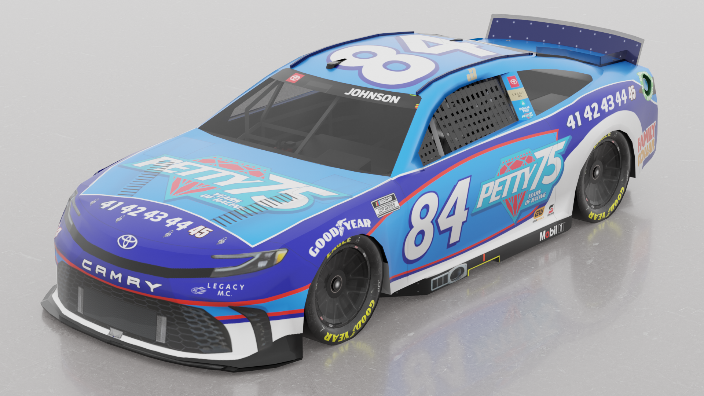
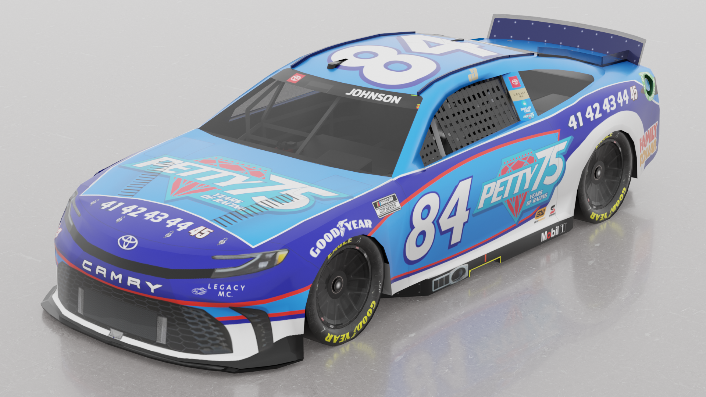

Hello! My name is Kevin and I'm a current student at Seminole State College. This is my 5th term and should be the final term I'm taking at SSC before I graduate. I have been a student since the Fall of 2022 and I hope you enjoy going through this resume website.
Skills
Adobe Photoshop
Adobe Illustrator
Adobe Premier Pro
Photopea
What I Do
Outside of class, I create custom paint schemes for the racing sim NASCAR Racing 2003 Season. It's been a 5 year effort that helped me realize that I want to become a official graphic designer for NASCAR Teams. I loved the sport ever since I moved to Florida and my works through Photoshop and Illustrator is my way of expressing said love.
You can find examples of my recent work in this page AND in the Photoshop Examples page.
As well, select examples of my work from Adobe illustrator are also showcased in the Illustrator Examples page.


 
